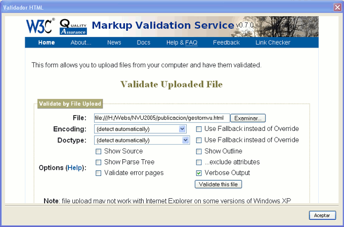
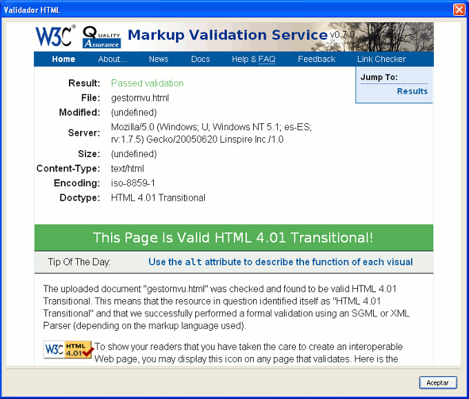
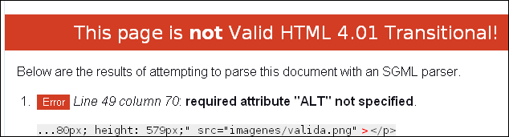

Validación

Hacer que nuestra página se ajuste a los estándares es importante si pretendemos garantizar la mayor estabilidad posible en su visualización, independientemente del navegador que se utilice para visitarla. Además, estaremos potenciando la accesibilidad, ya que si cumplimos los estándares es muy probable que pueda ser interpretada correctamente por agentes de usuario adaptados a situaciones especiales, como pueden ser los agentes sonoros que se encargan de leer el contenido de las páginas.
Así pues, es una práctica muy
recomendable validar todas nuestras páginas antes de
publicarlas en la red. N|VU dispone en el menú  de la
posibilidad de conectarnos directamente al servicio de
validación de páginas del W3C.
Obviamente, dado que es un servicio en línea, deberemos
encontrarnos conectados en ese momento o disponer de
una conexión permanente para poder utilizarlo. Al utilizar
esta herramienta se enviará para su validación
una copia del código de la página desde la que la
hemos llamado, o de otra que elijamos en nuestro equipo.
de la
posibilidad de conectarnos directamente al servicio de
validación de páginas del W3C.
Obviamente, dado que es un servicio en línea, deberemos
encontrarnos conectados en ese momento o disponer de
una conexión permanente para poder utilizarlo. Al utilizar
esta herramienta se enviará para su validación
una copia del código de la página desde la que la
hemos llamado, o de otra que elijamos en nuestro equipo.

El servicio de validación nos informará si todo ha ido correctamente o si hay errores en el código de la página.


En caso de que
el informe haya sido satisfactorio
podremos incluir en nuestra página el icono que
así lo
avala según se trate de una página escrita en
HTML 4.01  o en XHTML 1.0
o en XHTML 1.0 
Cuando la página no sea válida el
informe muestra los errores indicando el número de
línea en el que se han producido. Esto sería muy
útil para localizarlos y corregirlos... si la
numeración que muestra N|VU en la
pestaña  fuese correcta, pero no es ese el caso: aunque todo se vea con una
apariencia bastante ordenada y clara, lo cierto es que el programa
introduce unos saltos de carro que no podemos ver que son los que
provocan la discrepancia en la numeración de las
líneas, haciendo que los numeros que aparecen en el informe
de error sean mucho más altos que los que preceden a ese
fragmento de código cuando lo vemos en el programa.
Así pues, no nos queda más remedio que localizar
visualmente los fragmentos erróneos o, más
cómodamente, utilizar para
poder corregirlos.
fuese correcta, pero no es ese el caso: aunque todo se vea con una
apariencia bastante ordenada y clara, lo cierto es que el programa
introduce unos saltos de carro que no podemos ver que son los que
provocan la discrepancia en la numeración de las
líneas, haciendo que los numeros que aparecen en el informe
de error sean mucho más altos que los que preceden a ese
fragmento de código cuando lo vemos en el programa.
Así pues, no nos queda más remedio que localizar
visualmente los fragmentos erróneos o, más
cómodamente, utilizar para
poder corregirlos.
También se puede hacer la validación de páginas desde el navegador, visitando la página http://validator.w3.org/file-upload.html aunque podría haber algún problema si se hace utilizando Windows XP SP2 y una versión de Internet Explorer en la que no se haya instalado algunos parches de seguridad, especialmente el MS05-014
Una vez que has utilizado esta funcionalidad sería muy recomendable que adoptaras la costumbre de validar tus páginas antes de publicarlas: estarás garantizando en gran medida su accesibilidad y aprenderás a corregir pequeños errores que puedan ir surgiendo.